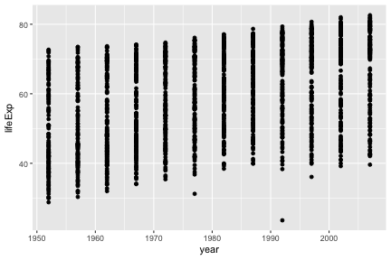

Plotting with ggplot2
We already saw some of R’s built in plotting facilities with the function plot. A more recent and much more powerful plotting library is ggplot2. This implements ideas from a book called “The Grammar of Graphics”. The syntax is a little strange, but there are plenty of examples in the online documentation.
If ggplot2 isn’t already installed, we need to install it.
install.packages("ggplot2")We then need to load it.
library(ggplot2)## Loading required package: methodsProducing a plot with ggplot2, we must give three things:
- A data frame containing our data.
- How the columns of the data frame can be translated into positions, colors, sizes, and shapes of graphical elements (“aesthetics”).
- The actual graphical elements to display (“geometric objects”).
Using ggplot2 with a data frame
Let’s load up our diabetes data frame again.
diabetes <- read.csv("data/diabetes.csv")ggplot(diabetes, aes(y=glyhb, x=age)) +
geom_point()## Warning: Removed 11 rows containing missing values (geom_point).
The call to ggplot sets up the basics of how we are going to represent the various columns of the data frame. We then literally add layers of graphics to this.
Further aesthetics can be added.
ggplot(diabetes, aes(y=glyhb, x=age, size=weight, color=gender)) +
geom_point()## Warning: Removed 12 rows containing missing values (geom_point).
Using ggplot2 with a matrix
Let’s return to our first matrix example.
dat <- read.csv(file="data/pvc.csv", row.names=1)
mat <- as.matrix(dat)ggplot only works with data frames, so we need to convert this matrix into data frame form, with one measurement in each row. We can convert to this “long” form with the melt function in the library reshape2.
library(reshape2)
long <- melt(mat)
head(long)## Var1 Var2 value
## 1 Resin1 Alice 36.25
## 2 Resin2 Alice 35.15
## 3 Resin3 Alice 30.70
## 4 Resin4 Alice 29.70
## 5 Resin5 Alice 31.85
## 6 Resin6 Alice 30.20colnames(long) <- c("resin","operator","value")
head(long)## resin operator value
## 1 Resin1 Alice 36.25
## 2 Resin2 Alice 35.15
## 3 Resin3 Alice 30.70
## 4 Resin4 Alice 29.70
## 5 Resin5 Alice 31.85
## 6 Resin6 Alice 30.20ggplot(long, aes(x=operator, y=value)) + geom_point()
Notice how ggplot2 is able to use either numerical or categorical (factor) data as x and y coordinates.
ggplot(long, aes(x=operator, y=value)) + geom_boxplot() + geom_point()
ggplot(long, aes(x=operator, y=value, group=resin, color=resin)) +
geom_line() + theme_bw()
ggplot(long, aes(x=operator, y=value)) +
facet_wrap(~ resin) + geom_point() + theme_bw()
Saving ggplots
ggplots can be saved as we talked about earlier, but with one small twist to keep in mind. The act of plotting a ggplot is actually triggered when it is printed. In an interactive session we are automatically printing each value we calculate, but if you are using a for loop, or other R programming constructs, you might need to explcitly print( ) the plot.
# Plot created but not shown.
p <- ggplot(long, aes(x=operator, y=value)) + geom_point()
# Only when we try to look at the value p is it shown
p
# Alternatively, we can explicitly print it
print(p)
# To save to a file
png("test.png")
print(p)
dev.off()See also the function ggsave.